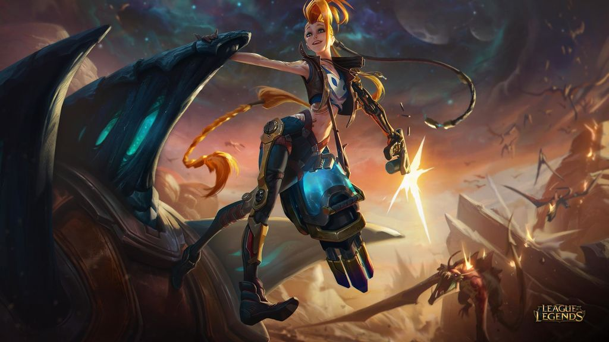
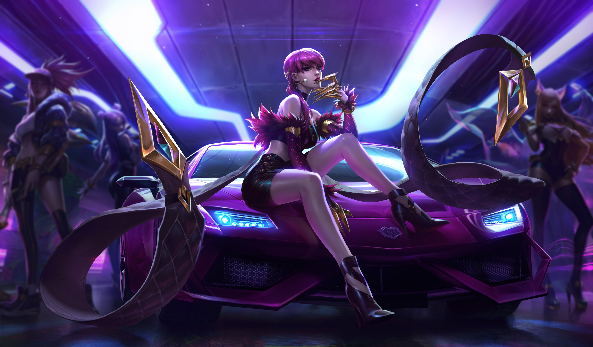
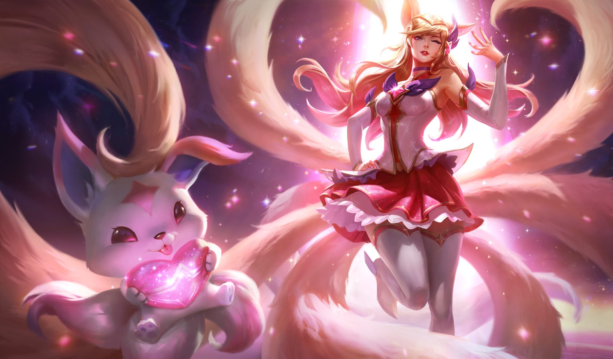
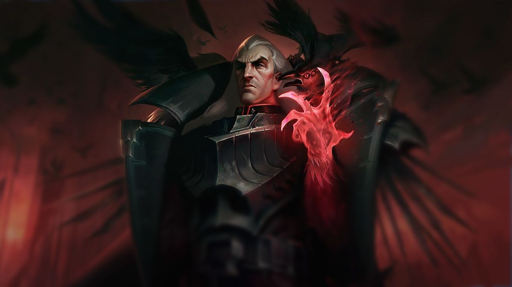

Shieda Kayn, un practicante sin igual de la letal magia sombría, lucha para alcanzar su verdadero destino: conducir la Orden de la Sombra hacia una nueva era de supremacía jonia. Esgrime el arma darkin viviente Rhaast, inmutable ante la progresiva corrupción de su cuerpo y su mente. Solo hay dos resultados posibles: o Kayn somete el arma a su voluntad...

Jinx, una maniática e impulsiva criminal de Zaun, vive para sembrar el caos sin pararse a pensar en las consecuencias, Con un arsenal de juguetes letales a su disposición,

Dentro de las oscuras vetas de Runaterra, la demonio Evelynn acecha a su siguiente víctima. Seduce a su presa con la apariencia voluptuosa de una mujer humana, pero una vez que alguien sucumbe ante sus encantos, Evelynn revela su verdadera forma. Es en ese momento somete a su víctima a un inimaginable tormento y se deleita con su dolor.
Impulsado por la ira, Tryndamere alguna vez emprendió su camino por Fréljord y desafió abiertamente a los más grandes guerreros del norte preparándose para los días más oscuros que se avecinaban.

Ahri, conectada de forma innata con el poder latente de Runaterra, es una vastayana que puede modelar la magia en orbes de energía pura. Se divierte manipulando las emociones de su presa antes de devorar su esencia vital.

jericho Swain es el visionario líder de Noxus, una nación en expansión que solo venera la fuerza. A pesar de ser expulsado y de quedar inválido y con el brazo amputado tras las guerras jonias, logró tomar el control del imperio con una determinación implacable... y una nueva mano demoníaca.